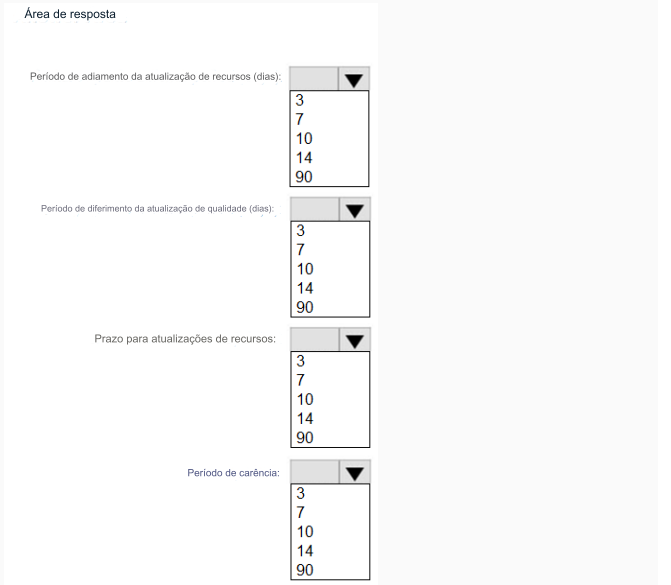

183-PONTO DE ACESSO
Você tem uma assinatura do Microsoft 365 que usa o Microsoft Intune Suite.
Você usa o Microsoft Intune para gerenciar dispositivos.
Você precisa configurar um anel de atualização que atenda aos seguintes requisitos:
• As correções e melhorias nas funcionalidades existentes do Windows podem ser adiadas por 14 dias, mas serão instaladas
automaticamente sete dias após essa data.
• A instalação de novos recursos do Windows pode ser adiada por 90 dias, mas será instalada automaticamente
10 dias após essa data.
• Os dispositivos devem reiniciar automaticamente três dias após a instalação de uma atualização.
Como você deve configurar o anel de atualização? Para responder, selecione as opções apropriadas na área de resposta.
NOTA: Cada seleção correta vale um ponto.
